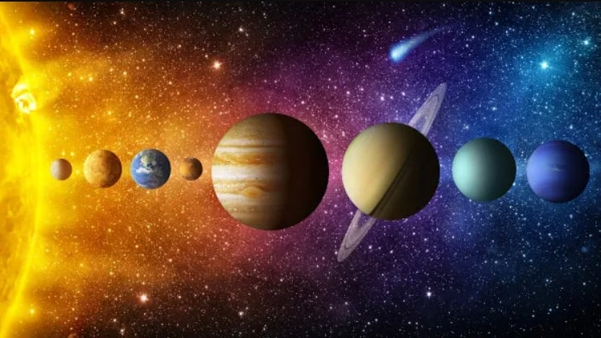

Start Quiz
Planetas do Sistema Solar
×
Responda ao quiz e teste seus conhecimentos sobre os planetas do nosso Sistema Solar!

Pergunta 1: Quais são os planetas externos do nosso sistema solar?
×
Netuno, Urano, Plutão e Éris
Júpiter e Saturno
Júpiter, Saturno, Urano e Netuno
Terra, Marte e Júpiter
Céres, Éris e Tétis
Pergunta 2: Quais planetas possuem anéis?
×
Só Saturno
Saturno e Júpiter
Urano e Netuno
As alternativas "A" e "C" estão corretas
As alternativas "B" e "C" estão corretas
Pergunta 3: Quais são os planetas internos?
×
Terra, Saturno e Netuno
Mercúrio, Vênus, Terra e Marte
Terra, Júpiter, Urano e Mercúrio
Ceres, Plutão, Saturno e Marte
Apenas Terra e Vênus
Pergunta 4: Em termos de hidrografia e relevo, qual é o planeta mais parecido com o nosso?
×
A Lua
Marte
Vênus
Mercurio
Plutão